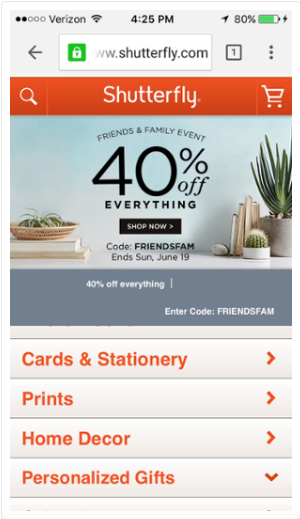
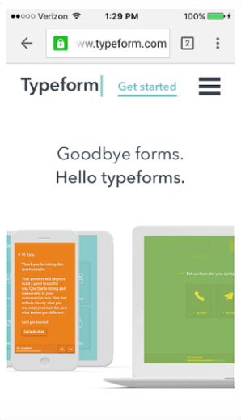
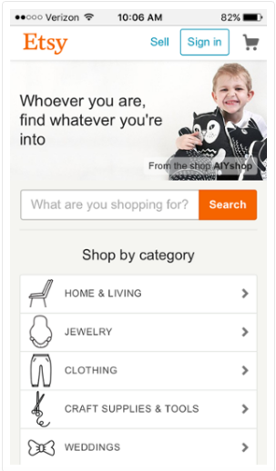
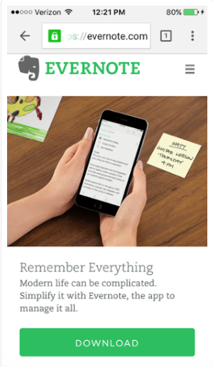
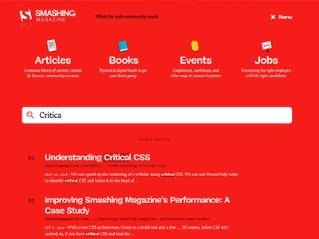

<table width="100%" border="1">

<font size=5 face="Kristen ITC">
   <CENTER><h1>Diseño Responsivo</H1></CENTER>
         <body>
    <HR>
<H2></h2> 
    <UL>
    <font size=6 face="Agency FB">
        <h3 style="color:black;"Autor:</h3>
      <li><a href="file:///C:/Users/Adrian/Desktop/Proyecto%202/que%20es.html">¿Que es el diseño responsivo?</a></li> <p></p>      
      
    </body>  
           <li><a href="file:///C:/Users/Adrian/Desktop/Proyecto%202/riesgos.html">Riesgos</a></li> <p></p>
    </body>
           <li><a href="file:///C:/Users/Adrian/Desktop/Proyecto%202/para%20que%20sirve.html">Para que sirve</a></li> <p></p>
    <body>    
           <li><a href="file:///C:/Users/Adrian/Desktop/Proyecto%202/contacto.html">Contacto</a></li> <p></p>
    </body>
         <div align="right">
           <iframe width="560" height="315" src="https://www.youtube.com/embed/p91HSrNPQV8" title="YouTube video player" frameborder="0" allow="accelerometer; autoplay; clipboard-write; encrypted-media; gyroscope; picture-in-picture" allowfullscreen></iframe>
         </div>
       <font size=4 face="Berlin Sans FB">
            </ul>
        <H2>Ejemplos Diseño Responsivo</H2>
            <ul>
               <OL>
                  <LI>Shutterfly: es un servicio online que permite a los usuarios crear álbumes de fotos, tarjetas personalizadas, artículos de papelería, etc.
                     Debido a que cada vez más gente utiliza únicamente la cámara de su teléfono móvil, Shutterfly no tuvo más remedio que rediseñar su web par ofrecer una buena experiencia móvil.</LI>
                     <center></center>
                  <LI>Typeform: es una empresa con una simple misión: “crear formularios impresionantes.” 
                     Su sitio web de escritorio está muy bien diseñado, ofrece vídeos de alta definición, animaciones y otros componentes de diseño complejos.</LI>
                    <center></center>
                  <LI>Etsy: es un sitio web de comercio electrónico donde la gente puede comprar y vender artículos hechos a mano.
                     La mayoría de los visitantes de esta web buscan un artículo específico o quieren navegar por las diferentes categorías de productos.
                     La página web optimizada para móviles de Etsy permite la búsqueda por elementos específicos, tiendas, o categorías.</LI>
                    <center></center>
                  <LI>BuzzFeed: es una empresa de noticias conocida por su contenido viral.
                     BuzzFeed sabe que muchos de sus visitantes acceden a su web a través de su smartphone, por lo que han creado una experiencia de usuario agradable para este tipo de lectores.
                     Cuando llegas al sitio web móvil de BuzzFeed, lo primero que ves es que algunas de sus piezas de contenido más populares se muestran en un formato simple con imágenes de gran tamaño para que puedas seleccionarlos fácilmente con el dedo.</LI>
                    <center></center>
                  <LI>Evernote: es una aplicación que te permite almacenar notas, imágenes y artículos para luego acceder a ellos a través de todos tus dispositivos. Dado que los usuarios tienden a descargarse la aplicación o a abrir la página web desde múltiples dispositivos, es esencial que Evernote ofrezca una buena experiencia a los usuarios móviles.</LI> 
                    <center></center> 
                  <LI>Smashing Magazine: es el sitio web y también es un brillante ejemplo de diseño inclusivo. El menú que se muestra a los usuarios de computadoras de escritorio presenta etiquetas e íconos.</LI>
                    <center></center>
                  <LI>Slack: también está diseñado para ser fácil de usar. Por ejemplo, sus botones de llamada a la acción abarcan toda la columna en tabletas y teléfonos móviles, lo que ayuda a los usuarios a evitar hacer clic en el hipervínculo «Iniciar sesión».</LI>
                    <center></center>
                </OL>
              <ul>
        <H2>¿Para que sirve un diseño web responsive?</H2>
              <LI>Un diseño web responsive sirve para que tu página web se visualice perfectamente en un móvil, en un ordenador o en una tablet.</LI>    
              </ul>    
              <H2>¿En qué consiste el diseño responsive?</H2> 
              <ul>
        <li>El diseño responsive se basa en redimensionar y recolocar los elementos de una página web para que estos se adapten al ancho y alto de cada dispositivo con el fin de visualizar correctamente todos los elementos del portal.</li>
        </ul>
    </DL>
        <ul>
        <H2>Ventajas del diseño web responsive</H2>
            <center></center>
            <li>La mejora de las conversiones y de la experiencia del usuario.</li>
            <li>La mejora del posicionamiento web SEO</li>
            <li>La creación de una misma URL independientemente del dispositivo utilizado</li>
            <li>La reducción del tiempo de desarrollo y costes de un proyecto web.</li>
        </ul>
        <H2>Deventajas del diseño web responsive</H2>
           <li>Dificultades técnicas. Necesitarás conocimiento avanzados de CSS o de programación para llevar a cabo este proceso.</li>
           <li>Incremento del código web. Si no se implementan correctamente las media-queries es posible que esto afecte al rendimiento de la página web (WPO).</li>
           <li>Falta de contenido personalizado en función del dispositivo.</li>
       </ul>
            <body bgcolor="#f1ae2b"><body>